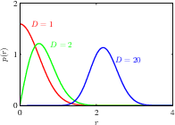
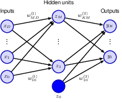
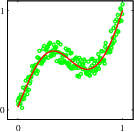
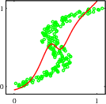

6 Deep Neural Networks
If a two-layer network can already approximate everything, why go deeper? to be deep is to be flexible.

in high dimensional spaces, most of the probability mass is located in a thin shell at a specific radius

 
forward vs inverse problem. A single NN can deal with one but not the other (see red fitted curve)
6.1 Limitations of fixed basis functions
6.1.1 The curse of dimensionality
6.1.2 High dimensional spaces
shells
6.1.3 Data manifolds
digits
6.1.4 Data-dependent basis functions
kernel methods
6.2 Multilayer networks
6.2.1 Parameter matrices
6.2.2 Universal approximation
with examples